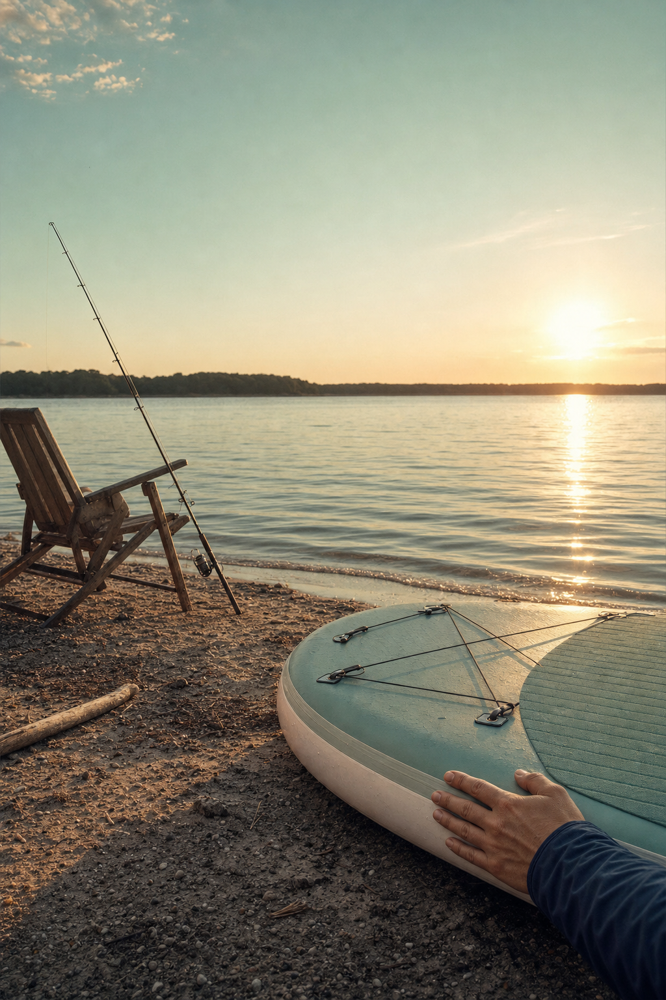
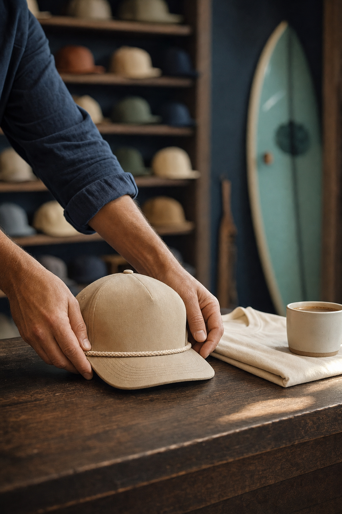

01The read
Everything here points at the water.
Craig — Nelson Taylor here. I direct and shoot brand content in Dallas–Fort Worth. The Rockwall Area Chamber's listing for your ribbon cutting on Nov. 5 is what sent me to your site and your Instagram.
What I noticed first is the direction of it all. The shop opened on the square at the end of September, Lake Ray Hubbard is close by, and your homepage puts it plainly:
“We believe life is richer on and around the water.”
The Collection follows it: caps in sand and sea-spray blue with rope detail, a bass and a mallard stitched on, tees in ivory, terracotta and moss. Craig spent more than a decade with a Texas fly fishing outfitter and leads the selection of brands and goods; Cade is shaping a shop where guests feel comfortable asking questions. With the Founders Circle and a standing welcome for dogs, it reads less like a store than a clubhouse.
So the idea is simple: film the shop as the clubhouse, and the water as its reason.

Panel 5 · the water, if you want it
02The idea
From the counter.
One format to carry the quarter. Every week opens on the same shot: the counter in morning light, a cup of coffee, and one thing set down by hand. A cap from the Collection. Gear for the weekend. A candle, a book from the shelf, something for the dogs.
Then the cut lets it live a little: in the room, in the hand, near the water when it belongs there. Over it runs a line on why it made the shelf, in Craig's own words, on screen or as a voice-over, whichever suits.
Same opening, new piece. The feed keeps a rhythm, the Collection gets a steady place in it, and nobody has to step in front of the lens unless they want to.

Panel 3 · the counter
03What we'd shoot
One day, square to shoreline.
One day at the shop, on a day you choose; a day the doors aren't open gives us the room to ourselves. Hands, product, light and the room. Nobody goes on camera who hasn't said yes.
-
Panel 1 · morning on the square
Creative direction — treatment frames, not final footage. Morning on the square
First light across the square and into the window. The room before anyone needs it.
-
Panel 2 · the room, set for the day
Creative direction — treatment frames, not final footage. The room, set for the day
Caps lined on the wall, the Collection folded, a board standing ready, the lamps coming up. Empty and orderly.
-
Panel 3 · the counter
Creative direction — treatment frames, not final footage. The counter
The weekly opener: one locked-off frame, shot again for every piece, so a quarter of openings comes from one morning.
-
Panel 4 · the Collection, up close
Creative direction — treatment frames, not final footage. The Collection, up close
Rope detail, the stitched bass and mallard, the weave of a tee. Macro stills on the A7RV, slow moves on the FX6.
-
Panel 5 · the water, if you want it
Creative direction — treatment frames, not final footage. The water, if you want it
A board's nose on the shore, a hand on the rail, the light going gold. Optional, and a conversation first; the day itself lives at the shop.
-
Panel 6 · lights on
Creative direction — treatment frames, not final footage. Lights on
Dusk, the lamps on, the room seen through the glass from the square. The last shot of the day, and a natural end card.
Alongside the video, the A7RV builds a stills bank from the same day and the same light: for the grid, the site and anything else that needs a photograph.
04The day
Just the day.
Plainly, here's what it is.
- 01One shoot day at CovebourneI direct and shoot it myself, at the shop on the square.
- 02Sony FX6 + Sony A7RVThe FX6 carries the motion; the A7RV covers stills and hybrid.
- 03Vertical-firstEvery deliverable is cut 9:16 for Reels, TikTok and Shorts.
- 04An edited set of vertical videos + a stills bankFrom the same day, built to run for a quarter.
- 05Two rounds of editsDelivered in about two weeks.
Anything beyond that is a conversation on a call.
Panel 5 · the shoreline
05Behind the camera
Who's shooting.
I'm Nelson Taylor, and Taylormade Creative is my studio in Dallas–Fort Worth. I've spent fourteen years in design and creative direction, and most of that work is now brand content: I direct it, shoot it on the FX6 and the A7RV, and cut it myself.
Recent work includes TONI&GUY Academy, Dreamcatchers Hair and It's a Secret Med Spa. Client work over the years includes Toni & Guy, Lava Cantina and KFC, and I shipped one iOS app, Run It UP! Dallas.
A shop with a point of view needs a camera that keeps to it. The plan on this page is the edit you'd get, because the person framing each shot is the one cutting it.
- Fourteen yearsdesign and direction
- FX6 + A7RVmotion and stills, one kit
- 9:16composed for the phone
- One personshoot through edit
Panel 4 · by hand
Panel 2 · the room
06Whenever it suits
No hurry at all. Take this at whatever pace the season allows.
If the idea feels like Covebourne, I'd be glad to spend twenty minutes on a call and walk the day, panel by panel. Strike anything that doesn't fit, and add anything I've missed.
And if the timing isn't right, “not yet” is a perfectly good answer.
Write to NelsonFounder & Creative Director · Taylormade Creative
(817) 707‑1291 · taylormademd@gmail.com
www.taylormadecreative.net · @taylormade_creative